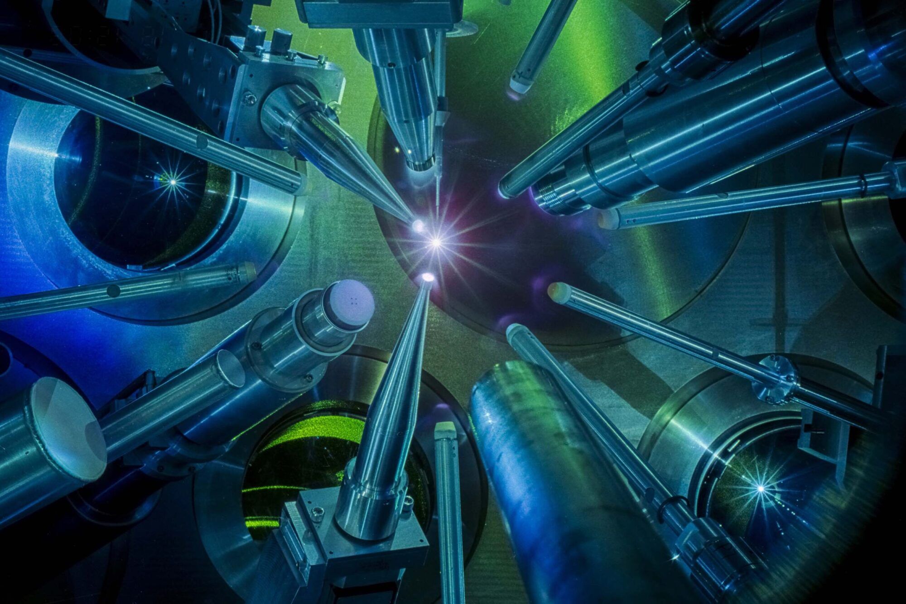

Background & Experience
High-Energy-Density Physics & Fusion Science
Laboratory for Laser Energetics · Lawrence Livermore National Laboratory · University of Rochester

My scientific foundation was built studying high-energy-density (HED) physics. Specifically my work has primarily been in laser driven implosion experiments where the most laboratory extreme pressures and temperatures are generated. These systems are of fundamental interest and also relevant for the study of Inertial Confinement Fusion (ICF). My Ph.D. thesis, Bayesian Inference of Fundamental Physics at Extreme Conditions, applied Bayesian statistical frameworks for extracting physical information from these experiments.
Experimental Design
I have significant experience designing and executing experiments at the Laboratory for Laser Energetics Omega Laser System. I have primarily performed various types of implosion experiments on the Omega60 often modulating the types of targets in order to access different regimes driven by different physical mechanisms.
Bayesian Inference
Applied Bayesian inference and MCMC methods to extract information from implosion experiments. Primarily seeking a single self-consistent model of the implosion dynamics to gain understanding of the physical properties underlying the evolution of the system. I make use of modern python tools and frameworks including Jax, PYMC, Numpyro, and others.
Full-Scale Simulations
Built simulation workflows coupling radiation-hydrodynamics codes to diagnostic models in order to build synthetic experiments. Used these systems to verify analysis pipelines and investigate the complex noise properties of our measurement systems.
Reduced Physics Models
I have developed many reduced physics models to attempt to isolate the essential physics driving the dynamics of a given system and extract insight. This includes semi-analytic solutions to hydrodynamic systems, mechanical and thermal models of implosions, and models of atomic structure that drive thermodynamic behavior of materials.
Highlighted Work: HED Physics & Bayesian Inference
The Data-Driven Future of High-Energy-Density Physics
A perspective article laying out the case for modern data analysis techniques including machine learning, Bayesian inference, and automated experimental design as essential tools for the future of HED physics. The field generates increasingly complex, high-dimensional datasets that outstrip traditional analysis; this paper surveys the emerging methods and argues for their systematic adoption.
HED-Physics Measurements in Implosions Using Bayesian Inference
Establishes laser-driven implosion experiments as a rich platform for fundamental physics measurements when coupled with principled statistical analysis. Demonstrates how Bayesian generative-modelling of nuclear and X-ray diagnostics transforms standard implosion data into quantitative constraints on thermodynamic conditions turning implosion experiments into a laboratory for studying fundamental physics.
Constraining Physical Models at Gigabar Pressures
Develops a Bayesian inference framework for extracting physical information from HED experiments explicitly framing the problem as applied information theory. The paper lays the foundation to quantify how much physical information each diagnostic observable carries about the underlying state, enabling rigorous model selection and parameter constraint at gigabar pressures where direct measurement is impossible.
Energy Flow in Thin Shell Implosions and Explosions
The companion results paper to the PRE framework. Applies the Bayesian analysis methodology to experimental data from thin-shell implosion experiments on OMEGA, producing the first quantitative measurements of energy partitioning and flow in converging laser-driven systems.
Baseball Research & Development
Houston Astros · Senior Director, R&D (2023–Present) · Lead Innovator (2022–2023)
Major League Baseball presents a unique opportunity to study complex and integrated physical systems in a data rich environment. In my time with the Houston Astros I have been exposed to many different aspects of the game and have had the opportunity to apply my physical modeling techniques to a wide variety of problems in baseball operations. My work has emphasized the dynamical systems of baseball and the way that they interact with each other to drive player performance and development. Most recently I have had the opportunity to lead the research and development efforts for the Astros, overseeing the technical vision and strategy for the baseball organization.
Research
We run formal research programs across a number of different areas and collaborate with university and industry partners.
Analysis
We build predictive models to aid with strategic decision making on many levels. These models vary in complexity from simple regressions to highly integrated Bayesian frameworks.
Development
We serve and maintain the software infrastructure for the baseball organization including data and model pipelines and applications used across the organization for users to interact with our work.
Cross-Organizational Impact
The work of the research and development department touches every aspect of baseball operations from scouting, both amateur and professional, international and domestic, player development, in game strategy, etc.
In the Press
Beyond Moneyball
University of Rochester News Center, 2024 — "Alumnus supports the Houston Astros using physics and engineering."
Bayes in Physics & Astrophysics
Learning Bayesian Statistics podcast, 2021 — Discussion of Bayesian methods in physics and astrophysics research.